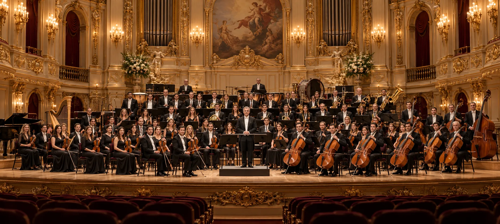
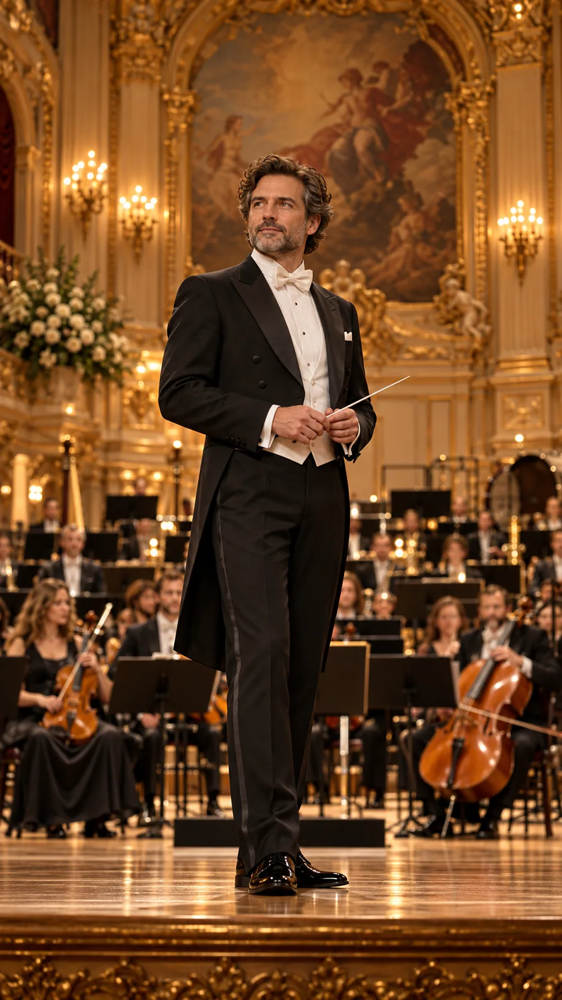

VALLEYS · SYMPHONY
01 / 03V / S
Густав Малер
Симфония № 2
«Воскресение»СИМФОНИЧЕСКИЙ СЕЗОНVALLEYS
Густав Малер
Симфония № 2
ПодробнееБИЛЕТЫ ПОЗЖЕ

Искусство, возведённое в абсолют (Art Elevated to Perfection)
01 / НАСЛЕДИЕLegacy
Симфоническая традиция раскрывается там, где совершенство исполнения встречается с живой энергией сцены.
Мы создаём художественную среду, в которой престиж академической музыки соединяется с открытостью новому поколению слушателей.
Философия оркестра* Демонстрационные показатели. Замените на реальные данные оркестра.

02 / ХУДОЖЕСТВЕННЫЙ РУКОВОДИТЕЛЬArtistic direction
Диалог дирижёра с оркестром — тонкая архитектура времени, тишины и звучания.
Персональные сведения будут добавлены после утверждения состава.
Художественный руководитель03 / АНАТОМИЯ ЗВУКАInside the orchestra
Исследуйте сцену, выбирайте инструментальные группы и знакомьтесь с тембрами симфонического оркестра.
04 / КОНЦЕРТНЫЙ СЕЗОНThe season
Избранные произведения симфонической литературы. Демонстрационная программа без назначенных дат.
Густав Малер
Вольфганг Амадей Моцарт
Сергей Рахманинов
05 / ЖИЗНЬ ОРКЕСТРАBeyond the stage
06 / АУДИОАРХИВRecordings
Коллекция записей, изданий и концертных впечатлений. Раздел подготовлен для будущих релизов оркестра.
К каталогу записей07 / CREATIVE DEVELOPMENT STUDIOThe studio
Промо-ролики, визуальные музыкальные издания и концепции иммерсивных трансляций.
Исследовать студию08 / СОТРУДНИЧЕСТВОPartnerships
Сотрудничество с филармониями, культурными институциями и партнёрами в области искусства.